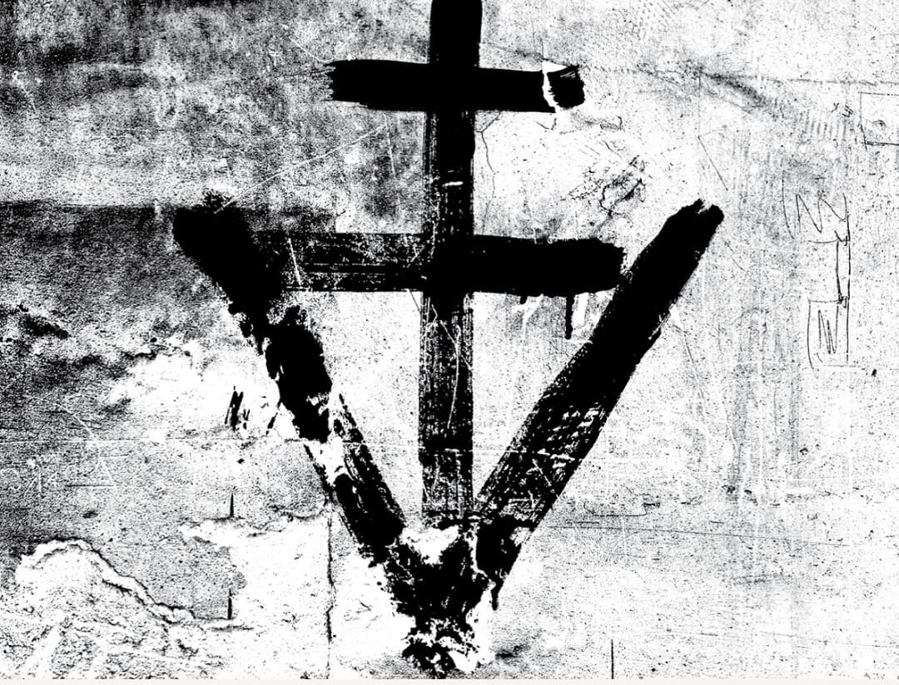
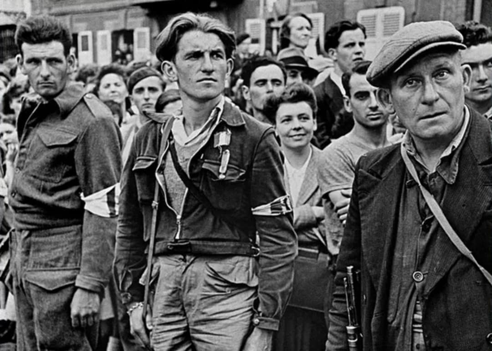
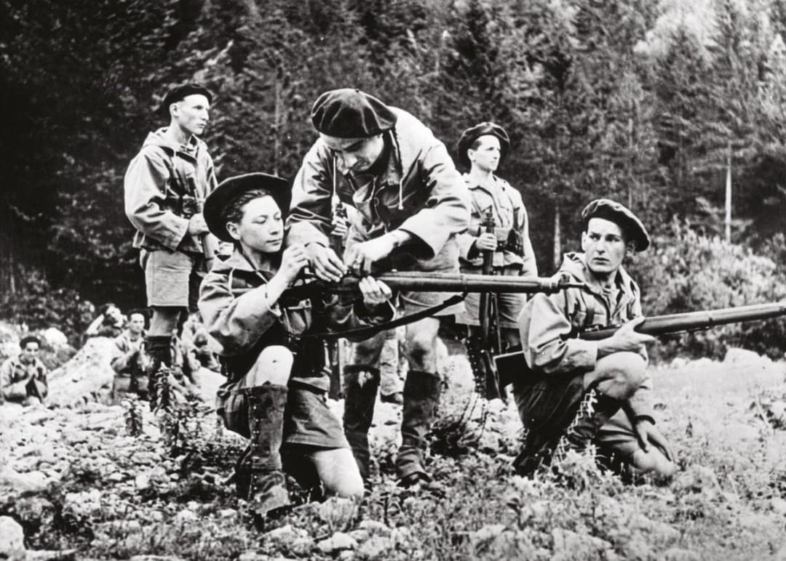

La Résistance française désigne l’ensemble des mouvements, réseaux, maquis et individus qui refusent la défaite de 1940, s’opposent à l’occupation allemande et combattent le régime de Vichy. Elle agit dans l’ombre, sans armée régulière, mais avec une détermination qui fera d’elle un pilier essentiel de la Libération.
Ses actions sont multiples : renseignement, sabotage, propagande clandestine, maquis armés, insurrections. En 1944, elle devient une force militaire structurée : les FFI.
Après la défaite de juin 1940, une minorité refuse l’armistice et choisit la clandestinité. Les premiers groupes se forment autour de personnalités isolées, de militaires, d’intellectuels, de patriotes et d’étrangers antifascistes.
Les premiers actes sont modestes : distribution de tracts, inscriptions sur les murs, collecte d’informations, aide aux prisonniers évadés.
Renseignement : observer les troupes allemandes, leurs dépôts, leurs déplacements, leurs défenses. Ces informations sont transmises à Londres et Alger via les réseaux spécialisés.
Sabotage : destruction de voies ferrées, lignes téléphoniques, dépôts de carburant, attaques de convois. Objectif : ralentir la machine militaire allemande.
Propagande clandestine : journaux interdits (Combat, Libération, Défense de la France), tracts, messages radio. Objectif : briser la propagande nazie et vichyste.
Maquis : groupes armés dans les montagnes et forêts (Vercors, Glières, Limousin), harcèlement de l’occupant, préparation de l’insurrection.
Aide aux Alliés : réception de parachutages, agents, armes, explosifs, radios.

Combat : fondé par Henri Frenay, l’un des plus importants mouvements.
Libération-Sud : dirigé par Emmanuel d’Astier de La Vigerie.
Franc-Tireur : mouvement lyonnais fondé par Jean-Pierre Lévy.
Organisation Civile et Militaire (OCM) : réseau structuré mêlant civils et militaires.
FTP et FTP-MOI : groupes de résistants communistes, souvent très actifs dans les actions armées.
Jean Moulin : unificateur de la Résistance, fondateur du CNR, mort en 1943.
Lucie Aubrac : résistante emblématique, opérations de libération audacieuses.
Pierre Brossolette : stratège, voix de la Résistance, mort en 1944.
Missak Manouchian : chef du groupe FTP-MOI, fusillé en 1944.
Rol-Tanguy : chef FFI de Paris lors de l’insurrection d’août 1944.

À partir de 1943, les mouvements clandestins reconnaissent Charles de Gaulle comme chef légitime. Cette union crée la France Combattante, réunissant les forces extérieures (FFL) et les forces intérieures (FFI).
Sans la Résistance, la France Libre n’aurait pas obtenu de légitimité nationale auprès des Alliés.
Avant et après le Débarquement, la Résistance multiplie les sabotages, bloque les renforts allemands, guide les parachutistes alliés, et déclenche des insurrections locales.
Paris se soulève le 19 août 1944. Les FFI combattent dans les rues jusqu’à l’entrée de la 2e DB du général Leclerc.
La Résistance permet à la France de se libérer elle-même.
Après-guerre, la Résistance devient un pilier de l’identité française : panthéonisation de Jean Moulin, création de mémoriaux, reconnaissance des étrangers engagés dans les FTP-MOI, décorations et archives.
Elle incarne le refus de la défaite, la lutte contre l’oppression et la défense de la liberté.